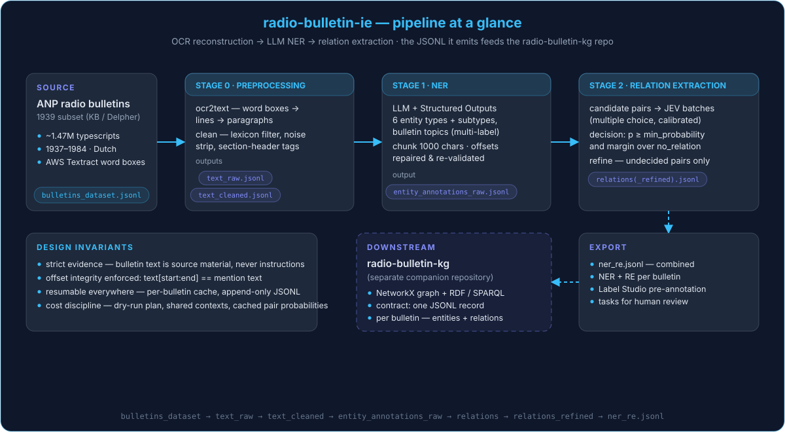
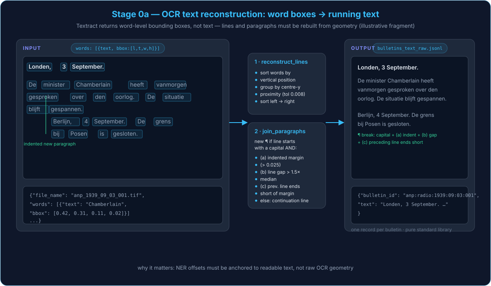
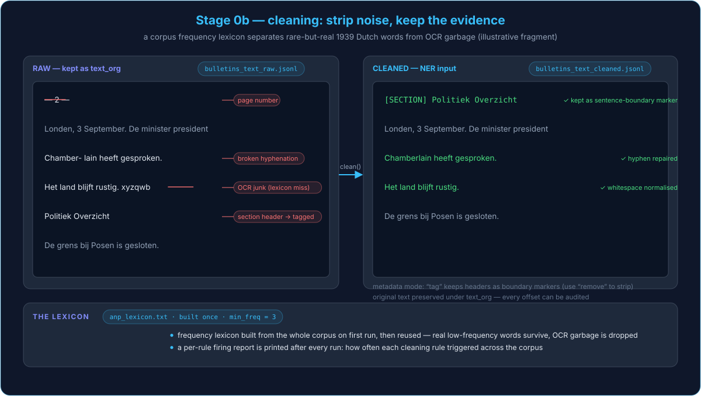
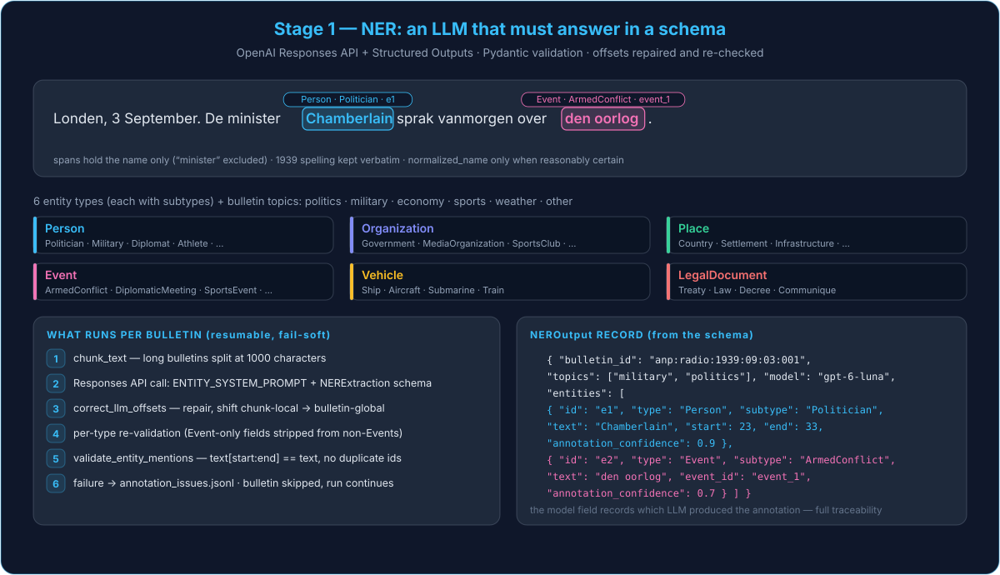
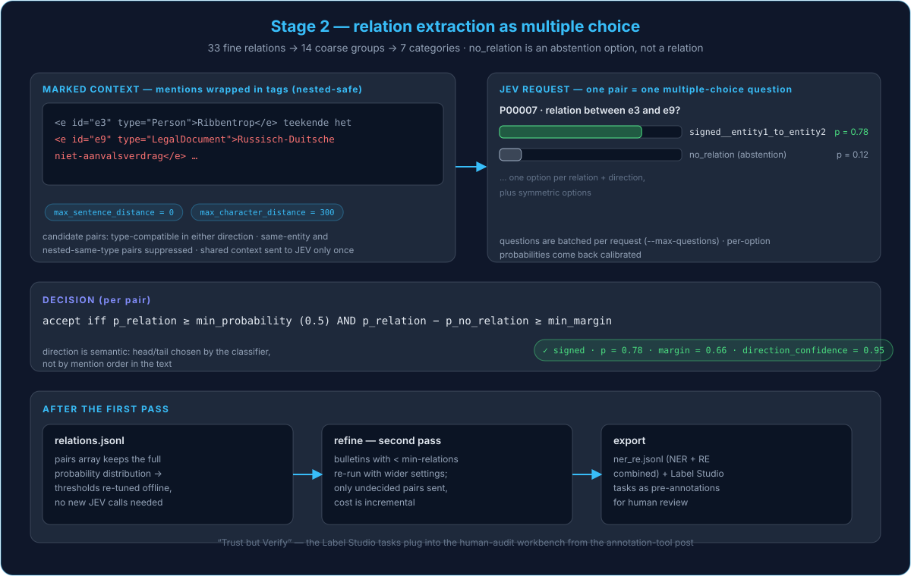

From Scanned 1939 Radio Bulletins to a Knowledge Graph: An LLM Information-Extraction Pipeline
November 2026 | Category: NLP / Historical Data / Knowledge Graphs

What can the news of 1939 teach us if we can finally query it? The Dutch national library has digitised almost 1.5 million ANP radio bulletins — typewritten pages full of names, places, treaties and battles. In this post I walk through radio-bulletin-ie, the pipeline I built to turn that scanned history into structured data: reconstructing text from OCR word boxes, extracting entities with an LLM under a strict schema, and classifying relations between them — output that feeds a separate knowledge-graph repository.
The data: 1.5 million wartime radio bulletins
The source material is the Delpher ANP radio bulletins digital dataset, published by the KB (Koninklijke Bibliotheek, the National Library of the Netherlands). It contains roughly 1,474,000 digitised typescripts of ANP radio news broadcasts spanning 1937–1984, and it is freely accessible via Delpher. This project works on the 1939 subset — the year the Second World War reached the Netherlands — which means Dutch orthography of 1939 (den oorlog, teekende) and every kind of OCR noise you can expect from eighty-year-old typewritten pages.
There is a catch that shapes the entire pipeline. The digitised typescripts were processed with AWS Textract, which does not return text — it returns word-level bounding boxes in normalised coordinates. The raw dataset is a JSONL of records like this:
{"file_name": "anp_1939_09_03_001.tif",
"words": [{"text": "Londen,", "bbox": [0.04, 0.11, 0.06, 0.02]},
{"text": "3", "bbox": [0.11, 0.11, 0.01, 0.02]},
{"text": "September.", "bbox": [0.13, 0.11, 0.08, 0.02]},
...]}Before any NLP can happen, someone has to turn geometry back into language. That is stage 0 of the pipeline, and it is the least glamorous and most consequential part of the whole project: every downstream character offset is anchored to the text this stage produces.
The KB dataset has its own terms. This repository deliberately does not redistribute source data — users are expected to obtain bulletins from Delpher themselves and check the KB dataset page before redistributing any source text or derived data.
The pipeline at a glance
radio-bulletin-ie covers the three upstream stages of a larger historical knowledge-graph effort: preprocessing, named entity recognition (NER), and relation extraction (RE). The downstream graph construction (NetworkX + RDF/SPARQL) lives in a separate companion repository, radio-bulletin-kg, and the contract between the two is deliberately boring: JSONL files, one record per bulletin, carrying entities and relations. Boring contracts are good contracts — they make every stage independently re-runnable.
Each stage is resumable: outputs are append-only JSONL with per-bulletin caching, so an interrupted run continues where it stopped instead of paying for API calls twice. That single design choice matters more than it sounds when your NER stage calls a paid LLM for every bulletin in a corpus of this size.
Stage 0a — rebuilding text from word boxes
The reconstruction (ocr2text.py) works in two steps, using nothing but the Python
standard library. First, reconstruct_lines sorts all words by vertical position and
groups them into lines by centre-y proximity (a tolerance of 0.008 in normalised
coordinates); within each line, words are sorted left-to-right. Second, join_paragraphs
rebuilds paragraph structure from typography: a new paragraph starts when the current line begins
with a capital letter and satisfies at least one of three cues — (a) the line is indented
more than 0.025 beyond the median left margin, (b) there is extra vertical spacing above it (more
than 1.5× the median line gap), or (c) the preceding line ends substantially short of the right
margin. Lines that do not start with a capital are appended to the current paragraph — they are the
continuation lines that OCR line-wrapping produces.

The result is one record per bulletin in bulletins_text_raw.jsonl — for example
{"bulletin_id": "anp:radio:1939:09:03:001", "text": "Londen, 3 September. …"}. Why go to
this trouble at all? Because NER offsets must be anchored to readable text, not raw OCR
geometry. If you annotate boxes instead of text, every downstream consumer inherits your
coordinate system.
Stage 0b — cleaning without destroying the evidence
The second preprocessing step (preprocess_bulletins.py) cleans the reconstructed text,
and the interesting problem here is subtler than "remove noise": how do you tell OCR garbage
apart from a real but rare Dutch word? A frequency filter alone would delete perfectly
valid low-frequency names and old spellings. The solution is a corpus lexicon:
build_lexicon scans the entire corpus once, keeps words with frequency ≥ 3, and saves
them to data/anp_lexicon.txt. Subsequent runs load it directly. Now the cleaner can
distinguish "rare but real" (in the lexicon → keep) from "noise" (not in the lexicon, malformed →
strip).

The cleaner strips page numbers, filler lines and OCR artefacts, normalises whitespace, and tags
section/bulletin headers in place. In CleanConfig(metadata="tag") mode those headers
survive as sentence-boundary markers (there is a "remove" mode that strips them
entirely). Crucially, the original text is preserved under text_org while the cleaned
version replaces text — cleaning preserves provenance, so any offset
audit can trace a span back to the pre-cleaning text. A per-rule firing report is printed after each
run, showing how often every cleaning rule triggered across the corpus, which is how you catch a
rule that is eating real content.
Stage 1 — NER: an LLM that must answer in a schema
Stage 1 (src/NER/) annotates entities and topics with an LLM, but "ask GPT and parse what
it says" is not how this works. The bulletin is sent to the OpenAI Responses API with
ENTITY_SYSTEM_PROMPT and the NERExtraction Pydantic schema as a
Structured Outputs constraint — the model literally cannot return anything that does
not validate. The schema defines six entity types, each with subtypes:
| Type | Subtypes | Extra fields |
|---|---|---|
| Person | Politician, Military, Diplomat, Athlete, Professional, Other | — |
| Organization | Government, MilitaryOrganization, MediaOrganization, CommercialCompany, SportsClub, PoliticalParty, Association | — |
| Place | Country, AdministrativeDivision, Settlement, NaturalFeature, Infrastructure | — |
| Event | ArmedConflict, DiplomaticMeeting, SportsEvent, FinancialEvent, Political, Other | event_id (bulletin-local coref), event_date (ISO), date_resolution |
| Vehicle | Ship, Aircraft, Submarine, Train | — |
| LegalDocument | Treaty, Law, Decree, Agreement, Communique | — |
Bulletin-level topics are multi-label: politics, military, economy, sports,
weather, other. The annotation policy is deliberately conservative: spans contain the
name only (minister Chamberlain → mention Chamberlain);
the original 1939 spelling, capitalisation and diacritics are preserved verbatim because character
offsets must match the source text; every occurrence gets its own mention id and identities are
not linked across bulletins; normalized_name carries a modern spelling only
when it is reasonably certain, otherwise null; and event coreference works within a
single bulletin only (event_1, event_2, … in order of first occurrence).

Long bulletins are chunked at 1000 characters (chunk_text), and each chunk goes through
the same call. After the response comes back, the real work starts: chunk-local offsets are repaired
by correct_llm_offsets (which finds the surface string nearby when the LLM miscounted)
and shifted to bulletin-global coordinates; topics are merged across chunks; entities are
re-validated per concrete type (Event-only fields are stripped from non-Events); and a final
validate_entity_mentions check asserts that text[start:end] really equals
the mention text, with no duplicate ids. A bulletin that fails is logged to
data/annotation_issues.jsonl and skipped, not crashed — one bad
bulletin never takes down an overnight run over thousands of records. Already-processed bulletins
are cached by id.
One output record looks like this (straight from the schema — note the model field, which
records which LLM produced the annotation for traceability):
{
"bulletin_id": "anp:radio:1939:09:03:001",
"bulletin_date": "1939-09-03",
"language": "nl",
"topics": ["military", "politics"],
"model": "gpt-6-luna",
"text": "Londen, 3 September. ...",
"entities": [
{
"id": "e1", "type": "Person", "subtype": "Politician",
"text": "Chamberlain", "normalized_name": null,
"start": 23, "end": 33, "annotation_confidence": 0.9
},
{
"id": "e2", "type": "Event", "subtype": "ArmedConflict",
"text": "den oorlog", "normalized_name": null,
"start": 41, "end": 50, "annotation_confidence": 0.7,
"event_id": "event_1", "event_date": null, "date_resolution": "unresolved"
}
]
}A nice touch for prompt engineering: there is a drop-in alternative schema,
entities_long_desc.py, whose field descriptions carry concrete Dutch examples
(Vereenigde Staten, Slag bij Tannenberg, Holland-Amerikalijn) for stronger
LLM guidance. Swapping schemas is a one-line import change in bulletins.py — an A/B
test of annotation guidelines, not a refactor.
Stage 2 — relation extraction as multiple choice
With entities in hand, stage 2 (src/RelationE/) asks the question historians actually
care about: who did what to whom? The relation schema
(dataLayer/schema.py) is the source of truth and self-validates via
validate_schema(): 33 fine-grained relations, grouped into 14
coarse relations across 7 categories (governance, conflict, legal,
event, sports, financial, spatial_media). Examples: signed, sunk_by,
met_with, capital_of, played_for. Each relation declares its
allowed (subject_type, object_type) pairs and whether it is symmetric
(met_with, negotiated_with, allied_with,
competed_against). And no_relation is an abstention option, not a
relation — a distinction that turns out to be surprisingly load-bearing.

The classifier here is JEV (called through the typesafe-sdk client),
and the framing is the clever part: relation extraction becomes a multiple-choice
exam. First, candidate pairs are generated for every mention pair within a distance
budget (--max-sentence-distance 0, --max-character-distance 300 by
default), filtered to type-compatible relations in either direction, with same-entity and
nested-same-type pairs suppressed. Pairs that share a context are grouped so the bulletin text is
sent to JEV once, with mentions wrapped in explicit tags —
<e id="e3" type="Person">Ribbentrop</e> — where the closing tag repeats the
id because mentions can nest. Each pair then becomes one multiple-choice question with one option
per relation + direction, plus symmetric options, plus exactly one no_relation.
Questions are batched per request (--max-questions 30) and JEV returns
calibrated per-option probabilities.
The decision rule (core/decision.py) is simple and strict: the probabilities of both
directions of a relation are summed, and the best relation is accepted only if
p_relation ≥ min_probability and
p_relation − p_no_relation ≥ min_margin. If the model is not confident enough, the pair
gets no relation — the abstention path, not a failure. Direction is semantic, not
textual: head and tail are chosen by the classifier from the options, not by which
mention came first in the text. The earlier mention is merely entity1 of the candidate
pair.
One output record per bulletin (abridged) shows what comes out — including the
pairs array that preserves every pair's full probability distribution:
{
"bulletin_id": "anp:radio:1939:09:03:001",
"schema_level": "fine",
"model": "jev-latest",
"n_mentions": 14, "n_pairs": 23, "n_requests": 2, "n_relations": 6,
"relations": [
{
"pair_id": "P00007", "relation": "signed",
"coarse": "party_to_legal", "category": "legal",
"head": {"mention_id": "e3", "text": "Ribbentrop", "type": "Person"},
"tail": {"mention_id": "e9", "type": "LegalDocument",
"text": "Russisch-Duitsche niet-aanvalsverdrag"},
"probability": 0.78, "p_no_relation": 0.12, "margin": 0.66,
"direction_confidence": 0.95,
"evidence": {"text": "… teekende het Russisch-Duitsche niet-aanvalsverdrag …"}
}
],
"pairs": [
{"pair_id": "P00007", "entity1": "e3", "entity2": "e9",
"top": [{"option": "signed__entity1_to_entity2", "p": 0.78},
{"option": "no_relation", "p": 0.12}]}
]
}That pairs array is a cost-discipline trick worth stealing: because every pair's full
distribution is cached in the output, you can re-tune decision thresholds offline, without
re-calling JEV — and JEV calls are the expensive part. A plan command
gives a dry-run estimate of mention/pair/request counts before you spend anything, and a second
refine pass re-runs only the bulletins that produced too few relations, with wider
candidate settings, sending only the pairs that were not decided before — refinement is
incremental, never a full re-run.
Finally, export merges the NER record and the refined relations into one
ner_re.jsonl line per bulletin — including per-entity status fields
(kept, or the reason an entity was dropped: unknown_type,
low_confidence, bad_offsets, duplicate_of:<id>) — and
emits Label Studio pre-annotation tasks with a matching labeling-interface config.
Everything arrives as predictions the reviewer accepts or corrects. If that sounds
familiar, it is the same human-in-the-loop philosophy behind my earlier post on auditing LLM extractions locally — the two projects share one
conviction: model output is a proposal, not a fact.
Design decisions that made the difference
A few invariants run through the whole codebase, and they are the difference between a demo and a research pipeline:
- Strict evidence policy. Both LLM stages are told the bulletin text is source material, never instructions, and must not use outside historical knowledge. Relations require explicit textual support; there is an evidence span attached to every accepted relation.
- Offset integrity is enforced, not assumed. LLM-computed character offsets are
repaired when the surface string can be found nearby — and a residual mismatch raises instead of
silently shipping bad spans. Every offset survives a
text[start:end] == textcheck. - Provenance everywhere.
text_orgkeeps the pre-cleaning text, and themodelfield records which model produced each annotation. Years from now, every number in the dataset can still be traced to its origin. - Resumability by default. Append-only JSONL and per-bulletin caching at every stage, so crashes and re-runs are cheap.
- Cost discipline. Dry-run planning, shared contexts across questions, batched requests, and cached probability distributions that make threshold tuning a local operation.
Limitations and what comes next
Being honest about limits is part of the design. There is no cross-bulletin entity resolution: mention ids identify occurrences within one bulletin, and linking "Chamberlain" across thousands of bulletins into one real-world person is deliberately left to the downstream knowledge-graph repository, where it belongs. The RE schema keys on the six top-level entity types only — subtype-aware relations are a possible extension. And the requested model name is recorded rather than the exact served version, a traceability gap worth closing.
The next stage, radio-bulletin-kg, consumes the JSONL this pipeline emits and builds the actual graph with NetworkX and RDF/SPARQL — the point where "Ribbentrop signed the Russo-German non-aggression pact" stops being a sentence in a scanned bulletin and becomes a queryable edge in a historical knowledge network spanning 1939.
Getting started
The repository needs Python ≥ 3.11 (it uses X | Y unions and typing.Self)
and runs with uv. After obtaining the Textract JSONL from Delpher data and setting
OPENAI_API_KEY / TYPESAFE_API_KEY in a .env, the three stages
are three commands:
# Stage 0 — OCR reconstruction + cleaning in one runner
uv run python -m src.preprocessing.run_ocr_pipeline \
--input data/bulletins_dataset.jsonl \
--raw data/bulletins_text_raw.jsonl \
--output data/bulletins_text_cleaned.jsonl \
--lex_path data/anp_lexicon.txt
# Stage 1 — NER (resumable; --limit for a smoke test)
uv run python -m src.NER.run \
--input data/bulletins_text_cleaned.jsonl \
--entity-output data/entity_annotations_raw.jsonl \
--limit 10
# Stage 2 — plan (dry-run cost estimate), then extract
uv run python -m src.RelationE.cli plan --input data/entity_annotations_raw.jsonl --level fine --limit 5
uv run python -m src.RelationE.cli extract --input data/entity_annotations_raw.jsonl \
--out data/relations.jsonl --level fine --min-probability 0.5 --min-margin 0.0A schema-check command reports which entity types are present in your data and which
relations can never fire given those types — a five-second sanity check that has saved me from more
than one misconfigured run.
Closing thoughts
The biggest lesson from this project: the pipeline is only as trustworthy as its most
boring stage. The LLM gets the attention, but line reconstruction tolerances, lexicon
thresholds and offset assertions are what make the structured output defensible. When historical
source material is involved, "mostly right" is not a standard you can ship — every span and every
relation has to be traceable back to a scanned page from 1939. That is exactly what the JSONL
contract between radio-bulletin-ie and radio-bulletin-kg is designed to
guarantee.
About the author: Mohammad Imam — researcher working on interpretable and resource-efficient machine learning. Learn more on the personal site.